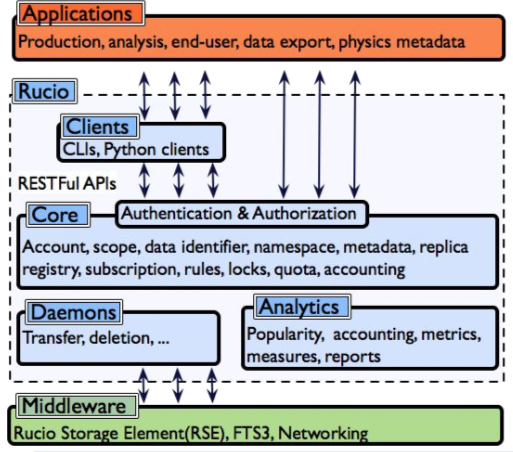

Main Components of Rucio
Rucio is based on a distributed system architecture & can be sectioned into four major layers:
- Clients
The clients layer consists of components such as the command line clients (CLI), Python clients, and the Javascript-based web user interface and configuration.
- Server
The server layer serves the purpose of authentication & provides a common API for interaction with clients & other external application, as also the Web UI.
- Core
This layer consists of all the Rucio-level abstractions that are explained at length in the Concepts & Terminology section.
- Daemons
The daemons layer takes care of all the asynchronous & continuous workflows in the background.
A diagrammatic representation of the 4 layers is as shown below

To learn more about each of these layers in detail, download our peer reviewed scientific paper.